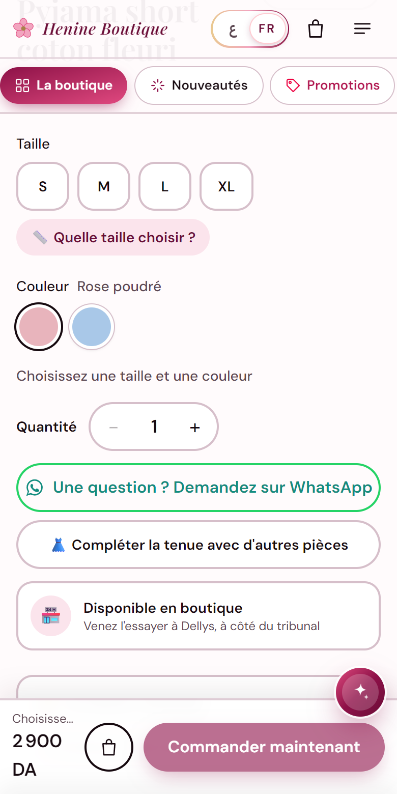
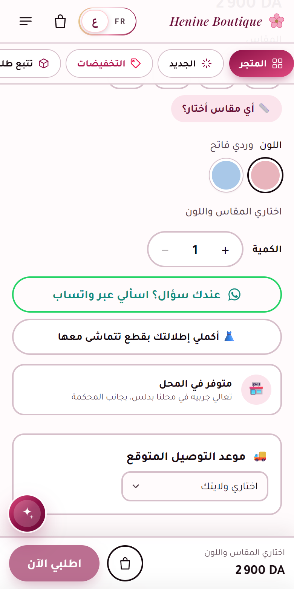

El Fatina · Team guide · October 2026
Everything the website and the admin do with WhatsApp: what customers see, what the team uses every day, and how to do each task step by step.
Your shop's WhatsApp number: 0554 65 07 18 (set in the admin; every button follows it).
How it works: every WhatsApp button opens WhatsApp on the phone or computer with the message already written. Nothing is sent by itself: the person checks the message and taps send.
Inside: 1. Setup · 2. What customers see (11 places) · 3. What the team uses (10 tools) · 4. Step-by-step tasks · 5. Good practice and limits
All the store's WhatsApp buttons use one number. Change it in one place and every button follows.
Eleven places send the customer to your WhatsApp, each with a message ready to send so you know at once what she is talking about.
| Where | What it does |
|---|---|
| Product page: « Une question ? Demandez sur WhatsApp » «عندك سؤال؟ اسألي عبر واتساب» | Opens a message with the product's name and link already in it. You see straight away which piece she is asking about. |
| Help bubble (bottom corner, every page) | The assistant panel has a WhatsApp button. When the assistant can't answer, it also suggests WhatsApp. |
| Menu (☰) and footer | A WhatsApp button in the menu and a WhatsApp icon among the social links at the bottom of every page. |
| Contact page | A big green « Écrire sur WhatsApp » button next to the contact form. |
| Boutique page (/boutique) | WhatsApp next to Call and Directions, with the shop's address and opening hours. |
| Order tracking page | « Une question sur cette commande ? · Écrire sur WhatsApp » with her order code already in the message. |
| Thank-you page (after ordering) | « M'envoyer le lien sur WhatsApp »: she sends herself the private tracking link of her order, to find it later. |
| « Partager » on a product | Shares the product to any WhatsApp chat or group (the phone's share menu, or WhatsApp directly). |
| Link previews | Any shop link pasted in WhatsApp shows the product's photo, name and price, not a blank link. |
| Size guide | The tips say « Entre deux tailles ? … écrivez-nous sur WhatsApp ». |
| Where orders come from | Visits arriving from a WhatsApp link are counted as WhatsApp in Statistiques → Sources, and so are the orders they lead to. |


In the admin, a green 💬 WhatsApp button opens a chat with the customer's number and a message suited to the situation. Several of them also note the contact in the order's history, so the whole team knows she was contacted.
| Where | What it does |
|---|---|
| Telegram, each new order | The order message in the team's Telegram group has a 💬 WhatsApp button: a confirmation message in her language (Arabic or French) with the order code, amount, delivery type and wilaya. |
| Commandes الطلبات → an order | Four big buttons: 📞 Appeler · 💬 WhatsApp · ✉️ SMS · 📝 Noter. WhatsApp opens the confirmation message, and the contact is written in the order's history (with your note if you add one). |
| Expéditions → 📞 Échecs de livraison توصيلات فاشلة | For a parcel the courier couldn't deliver: WhatsApp with « le livreur n'a pas pu vous livrer votre commande … Quand êtes-vous disponible ? ». The contact is counted on the follow-up. |
| Clients الزبونات → a customer | A WhatsApp button on her profile, with « Bonjour [name] 🌸 ». |
| Contact رسائل الزبونات (messages) | Reply to a contact-form message on WhatsApp: « … suite à votre message ». |
| Notifier الإعلام → waiting customers | When a size comes back in stock, each customer who asked for it is listed. One tap per number sends « Bonne nouvelle : [product] est de retour ». Then Marquer comme prévenues. |
| Vente au magasin البيع في المحل → 💬 WhatsApp | Records an order a customer sent you on WhatsApp: it joins the orders, already confirmed, and the stock is updated. |
| Ventes and Statistiques | Sales by channel, with WhatsApp shown separately, so you see what WhatsApp brings each month. |
| Avis الآراء | A nice review received on WhatsApp can be typed in and published (without the « Achat vérifié » badge, which is only for delivered orders). |
| Équipe الفريق | New: an invitation or « mot de passe oublié » link is sent to a team member with 💬 Envoyer sur WhatsApp. |
Bonjour Amina 🌸 Ici El Fatina. Nous confirmons votre commande EF-4K7P (5 400 DA), livraison à domicile à Alger. Merci !
See part 1: Paramètres → Contact & réseaux → WhatsApp → Enregistrer.
Use WhatsApp Business (free) on the shop's phone: quick replies (« / » + shortcut) for answers you send often, labels (New order, Paid, To deliver), and away messages outside opening hours.
One phone, one number: the number in Paramètres should be a phone the team actually watches all day. A message that waits a day is often a lost sale.
Customers' privacy (law 18-07): never forward a customer's address, phone or screenshots to other groups. Delete chats of customers who ask you to erase their data (Admin → Clients → « 🧹 Effacer ses données »).
Fake orders: an order nobody answers on the phone or WhatsApp after 48 h holds stock for nothing. Commandes shows « Libérer le stock » for these: cancel them (reason « injoignable ») once the team has tried.
What the shop does NOT do by itself: it never sends WhatsApp messages automatically. Every message is opened, checked and sent by a person. Automatic messages (for example « your parcel has left ») would need the paid WhatsApp Business Platform from Meta: a verified business, approved message templates, and a cost for each conversation. It isn't set up, to stay on free tools.
Telegram stays the team's notification channel: new orders, reminders, the evening report.
El Fatina · This guide matches the shop as of 16 October 2026.